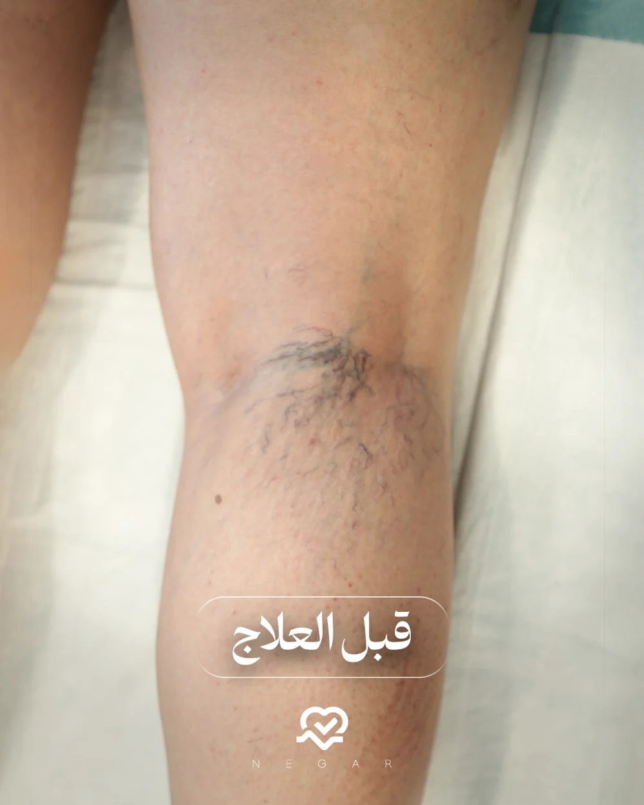
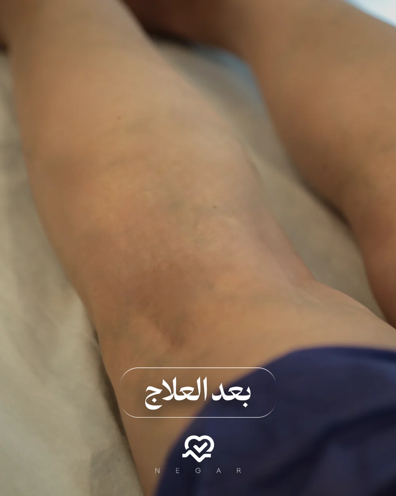
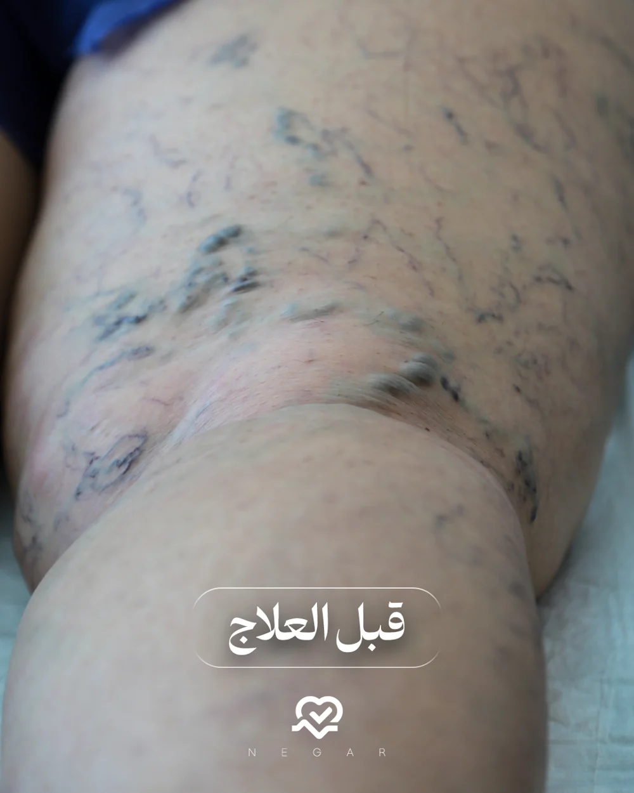
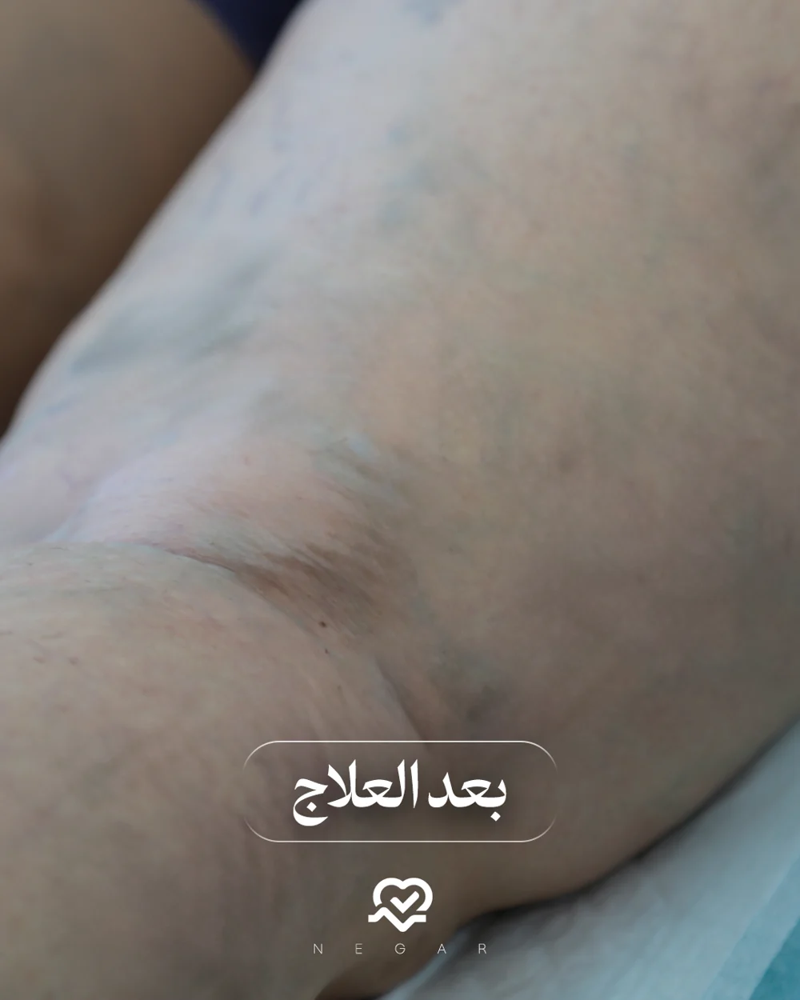
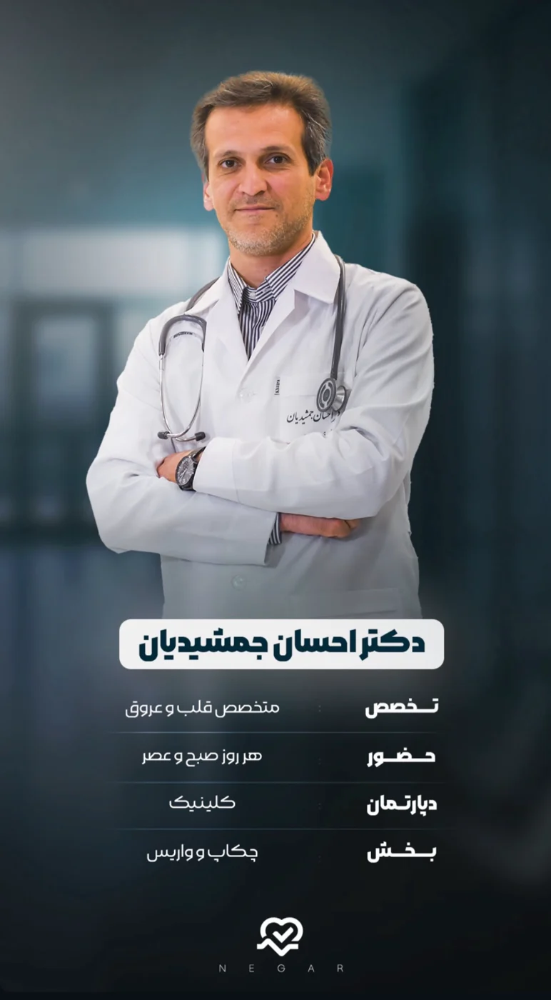
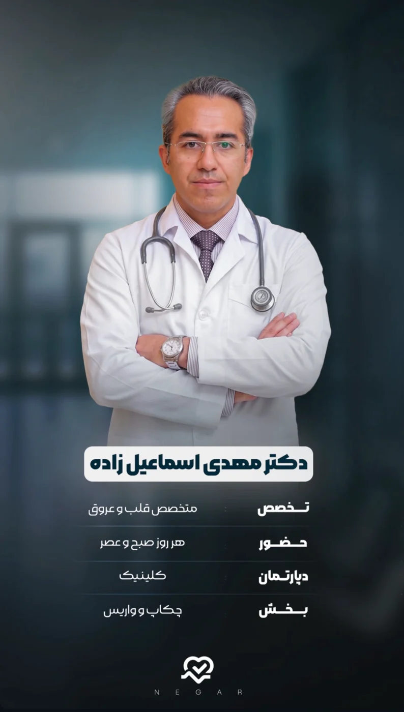
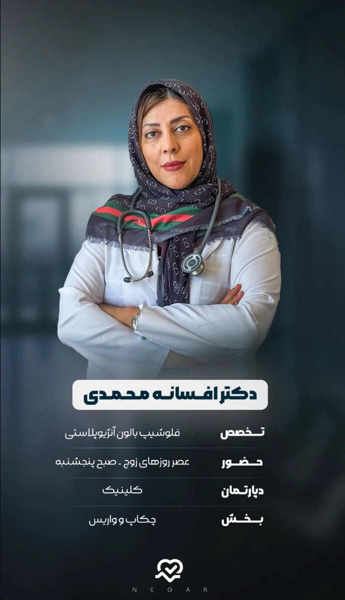
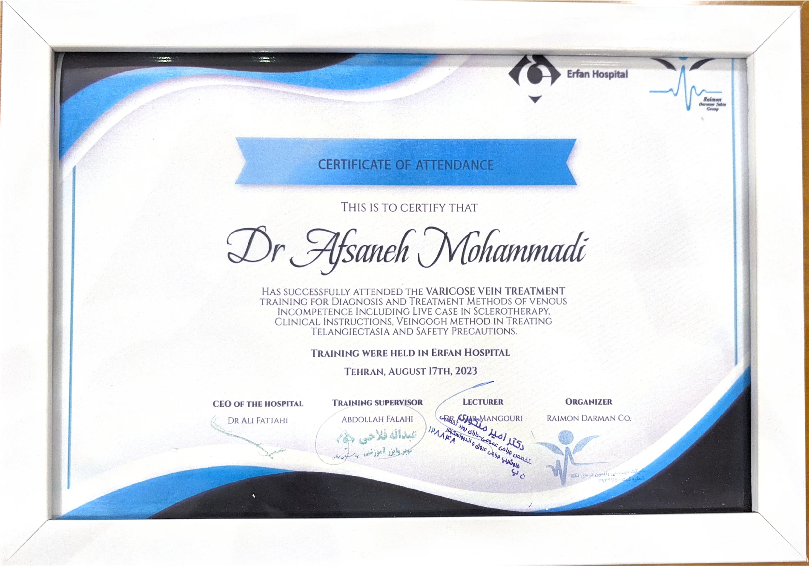
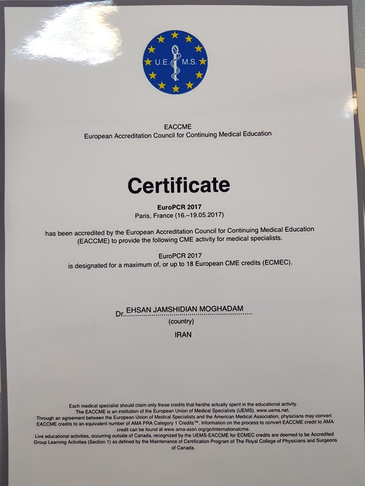

العلاج بالتصليب
العلاج بالتصليب (Sclerotherapy) أحد الخيارات المتاحة في نگار. يحدد الطبيب مدى ملاءمته لحالتك، ويُجري الجلسة مستندًا إلى خبرته في علاج الدوالي، مع توضيح العناية المطلوبة بعدها.
في عيادة نگار، تبدأ العناية بالدوالي بتقييم لدى طبيب قلب وأوعية دموية متمرّس في علاجها. يختار الطبيب الطريقة الأنسب لحالتك، بالتصليب أو داخل الأوعية، ويُجري العلاج بنفسه. للاستشارة وحجز موعد، تواصل مع العيادة عبر واتساب.
كل ما تحتاجه للبدء، رسالة على واتساب. نحن هنا لمساعدتك.
شاهد شرح الطريقتين من داخل المركز، ثم اسألنا عمّا يهمّك.
خبرة الطبيب في أمراض القلب والأوعية وعلاج الدوالي ترافقك من التقييم إلى الإجراء. يشرح لك الخيارات المناسبة، ويجيب عن أسئلتك حول الجلسات والعناية بعدها. للاستشارة وحجز موعد، راسل العيادة مباشرة.
تواصل مع العيادة للاستشارة ←اختيار الطريقة يبدأ بتقييم طبي، لا بإجراء واحد يناسب الجميع. يراجع طبيب القلب والأوعية حالتك ويشرح لك العلاج المقترح قبل البدء.
العلاج بالتصليب (Sclerotherapy) أحد الخيارات المتاحة في نگار. يحدد الطبيب مدى ملاءمته لحالتك، ويُجري الجلسة مستندًا إلى خبرته في علاج الدوالي، مع توضيح العناية المطلوبة بعدها.
العلاج داخل الأوعية (Endovascular) خيار آخر يحدده طبيب القلب والأوعية وفق تقييم حالتك. يتولى الطبيب الإجراء ويشرح لك خطواته وما تحتاج إلى معرفته بعد الجلسة.
صور من حالات المركز قبل العلاج وبعده، لتتعرّف على تجربتنا عن قرب. اضغط على أي صورة لمشاهدتها بحجم أكبر.


الحالة الأولى


الحالة الثانية
تعرّف على الفريق الطبي في نگار. يجمع الطبيب المعالج بين تخصص القلب والأوعية والخبرة في علاج الدوالي، لتكون أسئلتك وخيارات علاجك بين يدي طبيب يعرف حالتك.

د. إحسان جمشيديانمتخصص في أمراض القلب والأوعية الدمويةذو خبرة في علاج الدوالي

د. مهدي إسماعيل زاده

د. أفسانه محمدي
راسل العيادة عبر واتساب للاستشارة وحجز موعد لعلاج الدوالي.
في موعدك، يفحصك طبيب القلب والأوعية ويضع خطة العلاج المناسبة. يشرح لك الإجراء، ويتولى العلاج ويحدد تعليمات العناية بعده.
يتولى العلاج طبيب قلب وأوعية دموية لديه خبرة في علاج الدوالي، من تقييم الحالة واختيار الطريقة إلى إجراء العلاج وشرح العناية بعده.
يحدد الطبيب الطريقة المناسبة بعد فحص حالتك، ويشرح لك الخيارات وأسباب اقتراحه للعلاج. للاستشارة وحجز موعد، راسل العيادة عبر واتساب.
راسلنا على واتساب للاستفسار عن رسوم الزيارة وتفاصيل التكلفة. وخلال موعدك، يوضّح لك الطبيب عدد الجلسات وخطوات العلاج.
تقع عيادة نگار للقلب في مشهد، شارع وكيل آباد، بين وكيل آباد ٤٧ و٤٩، رقم المبنى ١٠٢٥. يمكنك فتح موقع العيادة على خرائط Google من قسم الموقع أدناه.
راسل العيادة مباشرة عبر واتساب للاستشارة وحجز موعد.
بالتأكيد. اسأل الطبيب خلال زيارتك عن العناية بعد الجلسة والعودة إلى أنشطتك اليومية، واطرح كل ما تريد معرفته عن خطوات العلاج.
يمكنك زيارة حسابنا على إنستغرام @varis_negar لمشاهدة المزيد من الفيديوهات.
للمزيد من فيديوهات المركز، زر حسابنا على إنستغرام. للاستشارة وحجز موعد، تواصل مع العيادة عبر واتساب.
شاهد المزيد على @varis_negar ←مقتطفات من المواد التعريفية للمركز.
لديك سؤال عن علاج الدوالي؟ تواصل مع عيادة نگار للاستشارة وحجز موعد مع الطبيب. يبدأ قرار العلاج بتقييم طبي لحالتك وشرح الخيارات المناسبة لك.
استشارة وحجز موعد عبر واتساب ←د. أفسانه محمدي — شهادة حضور دورة تدريبية في تشخيص وعلاج الدوالي، أُقيمت في مستشفى عرفان بطهران بتاريخ ١٧ أغسطس ٢٠٢٣.

فتح الشهادة بالحجم الكامل ↗د. إحسان جمشيديان مقدم — شهادة تعليم طبي مستمر مرتبطة بمؤتمر EuroPCR 2017، باريس، فرنسا، ١٦–١٩ مايو ٢٠١٧.

فتح الشهادة بالحجم الكامل ↗